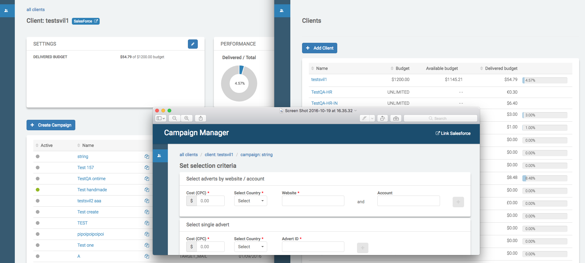

Npm vs. campaign manager
Say Hello to Yarn
Use case

Ogni pacchetto che viene installato può dipendere da altri pacchetti.
Si rischia che alla fine di un grosso progetto ci si ritrovi con centinaia o migliaia di pacchetti nell’albero delle dipendenze.
Cosa sono i package manager?
Strumenti che consentono di installare e gestire moduli esterni per fornire funzionalità aggiuntive al sistema di base.


PRO
- Metodo uniforme per installare i pacchetti e tenerne traccia.
- Popolarità: vi sono migliaia di pacchetti disponibili.
-
Si evita di riscrivere parti di codice utilizzando qualcosa di funzionante, pronto e testato.
(in teoria)
CONTRO
- Rischio di trovare documentazioni incomplete o errate.
- Conflitti fra sottomoduli: durante l'installazione di un modulo, npm installa anche eventuali altri moduli da cui il modulo installato dipende, utilizzando una struttura gerarchica descritta in un file package.json.
Se siete fortunati...
... vs. Real life

Yarn
Per ovviare agli attuali problemi di npm, Facebook e Google hanno deciso di collaborare per creare un nuovo package manager.
La sua peculiarità è proprio la capacità di catalogare e installare le dipendenze secondo uno schema di versioning semantico (SEMVER) il quale permette di definire uno schema di controllo delle versioni che riflette i tipi di modifiche in ogni nuova versione (es. se una modifica rompe una API, aggiunge una feature o corregge un bug).
P.S. La leggenda narra che il nome "YARN" derivi dall'onomatopea dell'urlo che ha cacciato lo sviluppatore di Facebook dopo l'ennesimo problema derivato dai problemi dalle sottodipendenze dei moduli npm.

Lo scopo di Yarn non è quello di sostituire Npm, bensì di migliorarlo.
vanilla NPM
-
Il client NPM installa le dipendenze in una cartella (node_modules) in maniera “non deterministica”: significa che l’ordine delle dipendenze installate può variare da persona a persona.
Queste differenze possono causare problemi e bug che possono richiedere anche parecchio tempo per il fix. - NPM prende le dipendenze solo dalla sua repository e le installa una alla volta, impiegando parecchio tempo.
- Non consente l’installazione offline.
NPM + YARN
- Grazie a “lockfiles” e algoritmi, il client YARN permette di installare le dipendenze in maniera “deterministica”. I lockfiles permettono di bloccare a una specifica versione le dipendenze installate e garantisce che ogni installazione sia uguale in ogni macchina (risolve le differenze di installazione da persona a persona).
- YARN permette installazioni di dipendenze in parallelo, sfruttando non solo i registri di NPM, ma anche quelli di BOWER.
- Permette di mettere in cache eventuali pacchetti già installati, facilitando l’installazione offline.
Come installarlo?
npm install -g yarn
"NPM INSTALL YARN" = getting your ex-girlfriend to move your new girlfriend's stuff into your house.
Come inizializzarlo?
yarn init

Come integrarlo in un progetto già avviato?
yarn install
Come detto prima, dato che Yarn veste la maschera di "ottimizzatore", si affida principalmente allo stesso package.json di Npm

Come funziona?
-
RESOLUTION
Yarn inizia a risolvere le dipendenze facendo richieste ai registri e cercando ogni dipendenza ricorsivamente.
-
FETCH
Yarn controlla nella cache globale se un pacchetto è stato già installato, in caso di esito negativo scarica il pacchetto e lo salva nella cache.
-
LINK
Yarn copia tutti i file di cui ha bisogno dalla cache globale dentro la cartella “node_modules”.
Conclusione
La mia idea è che può essere un ottimo strumento nel caso in cui si debbano mettere le mani in progetti di rilevante entità; in caso contrario punterei ancora su NPM fino a che Yarn non avrà preso abbastanza piede da avere una sicura base di sostenitori e risolutori di bug (anche se nell’effettivo ha ottenuto più statistiche positive in 4 giorni di vita rispetto alla secolare presenza di npm).
Polymer sta migrando a Yarn!